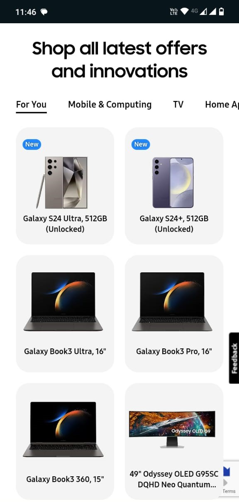
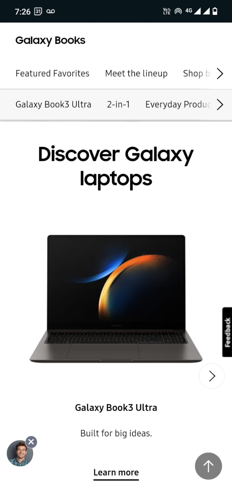

Visual Hierarchy
 SAMSUNGI chose Samsung's page because it perfectly illustrates the principle of visual hierarchy for the
following
reasons:
Firstly, this page uses size and scale to focus on specific objects or functions.For instance, when we
visit the page on our mobile device, the first things we notice are the products, as they are large and
easy to see.
Furthermore, colors have been carefully selected to create contrast with the
background, making the page easily readable.
Finally, the varying font sizes create a natural hierarchy, emphasizing crucial options over
less important ones.
White Space and Clean Design
 SAMSUNGI chose Samsung's page because it illustrates the principles of White Space and Clean Design for the
following reasons:
First,the page presents clear options by using whitespace, making it easy to see what you are looking
for.
Also, the space between letters in text improves the readability of the information, and the harmony
among all images and elements of the pages offers an easy understanding of how the page works.
Hick's Law
Mercado Libre I chose Mercado Libre's page, an Argentine E-commerce platform, because it illustrates Hick's Law for
the following reasons:
First, the page presents a word search feature, helping you quickly find the product you are looking
for.
Second, the page offers category-based search, where you can find many products related to a specific
subject, such as "Offers" or "Sale," making the search for subjects agile and fast